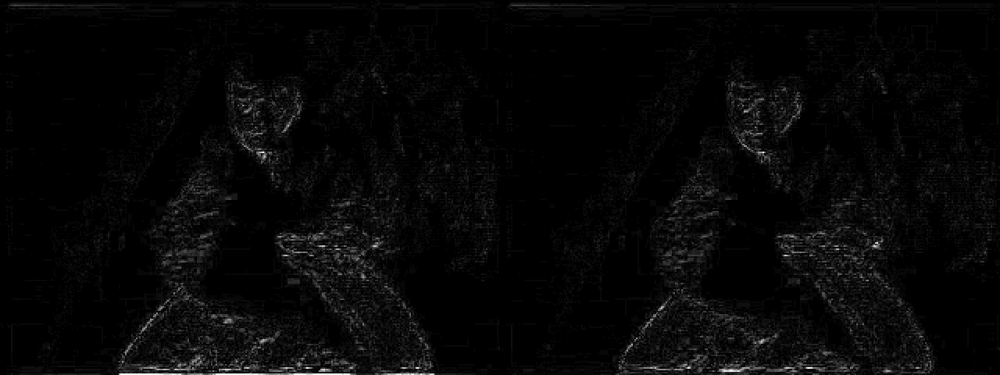

QTempGaussMC (vs-jetpack) as an alternate deinterlacer
Investigation for issue #117 · 2026-11-03 · measured on macOS arm64 against deps 1.14.0 · nothing in the repo was changed
Short answer: worth adding as an advanced-only Deinterlace method on macOS arm64, Windows and Linux. It is not possible on macOS x64.
- Its deinterlacing is measurably but modestly better than our havsfunc QTGMC Slower: about +0.5 to +0.8 dB PSNR against a known ground truth when run at the same speed.
- At its own default settings it runs at 5.5 fps on 720×576 here, against havsfunc's 84 fps. Two changes bring it to 75 fps: use our NEON
nnedi3plugin instead ofznedi3, and use a smaller NNEDI3 network. - It needs a new deps release adding mvutensils (pinned to v9), resize2, and vs-jetpack with its Python packages (about 54 MB).
- The issue's suggestion of feeding our QTGMC settings through
qtgmc_convertdoesn't work for us.
1. What QTempGaussMC is
QTempGaussMC is a full rewrite of QTGMC in vs-jetpack. It is MIT-licensed and published on PyPI as vsjetpack (2.2.6 tested). It needs Python ≥3.12 and VapourSynth ≥R78, which our bundles already meet. Its parameter names, defaults and plugins all differ from havsfunc's.
The issue suggested qtgmc_convert to map our existing QTGMC settings onto it. Its own README (and its author in the issue thread) advises against that except for strict parity with havsfunc. It also needs Python ≥3.13 (we ship 3.12) and an unreleased vs-jetpack commit. not viable
2. What it needs that our bundle lacks
I found this by reading the source of the default QTempGaussMC().deinterlace() path, then confirmed it by running the script under the bundled vspipe until it ran.
| Needs | In deps 1.14.0? | Licence | Notes |
|---|---|---|---|
mvu — mvutensils | missing | GPL-2.0 | A refactored MVTools fork by VapourSynth's author. Every motion-vector call goes through it, not our mv. PyPI wheels exist for every platform, and on x86 it loads a build matched to the CPU. vs-jetpack 2.2.6 only works with v9 (see the log below). |
resize2 | missing | LGPL-2.1 | The first failure when run against our bundle. |
akarin.Expr | not on macOS x64 | LGPL-3.0 | There is no fallback to std.Expr. Our macOS x64 bundle has no akarin (havsfunc patch 7), so it cannot run there. |
znedi3 | shipped | GPL-2.0 | Hard-coded as the NNEDI3 backend. It is scalar code on ARM, which is the main cause of the slowness below. |
vszip, zsmooth | shipped | MIT | |
| numpy, psutil, rich, jetpytools, typing-extensions | missing | various | Pure-Python plus numpy. About 54 MB installed, of which numpy is 34 MB. |
Other packaging concerns: the mvutensils and znedi3 macOS x86_64 wheels require macOS 15, but our x64 build supports macOS 12. vs-jetpack shipped five releases between August and October, so it needs a hard pin. The Deinterlace schema already has four simple-mode methods, which is the curation limit, so a fifth must be advancedOnly.
Failures hit along the way
Against the shipped bundle: no resize2
File "vapoursynth.pyx", line 3126, in vapoursynth.Core.__getattr__ AttributeError: No attribute with the name resize2 exists. Did you mistype a plugin namespace or forget to install a plugin?. Did you mean: 'resize'?
With the latest mvutensils (v10): API mismatch with vs-jetpack 2.2.6
File ".../vsdenoise/mvtools/mvtools.py", line 437, in analyze
vects = core.mvu.AnalyseMany(super_clip, radius=tr, delta=2 if self.fields else 1, **analyze_args)
vapoursynth.Error: AnalyseMany: Function does not take argument(s) named fields
mvutensils v10's changelog: "Removed the fields and tff arguments for all except the depan filters…". Pinning mvutensils 9 fixes it. v7's changelog also mentions a fix for AVX-512/AVX2 code in static initialisers, which matters for our v2 CPU tier.
3. How quality was measured
A real interlaced clip has no correct answer to compare against, so I built one:
- I took two 240-frame segments of the progressive film clip
Tests/TestResources/small_clip.mp4(320×240), from frames 0–239 and 1400–1639, and treated each frame as one field-time sample at 50 Hz. - I interlaced them with ffmpeg
interlace=scan=tff:lowpass=0(commands below): 120 interlaced frames, where each frame's top field comes from frame 2n and its bottom field from 2n+1. - I piped them through our own
pipe_source.pyinto the bundled vspipe, deinterlaced at double rate (TFF), and compared each of the 240 output frames against its original using luma PSNR and SSIM.
ffmpeg -i Tests/TestResources/small_clip.mp4 -vf "select=between(n\,1400\,1639),setpts=N/50/TB" \
-fps_mode passthrough -pix_fmt yuv422p -f rawvideo gt/ref1400.yuv
ffmpeg -f rawvideo -pix_fmt yuv422p -s 320x240 -r 50 -i gt/ref1400.yuv \
-vf interlace=scan=tff:lowpass=0 -f rawvideo gt/int1400.yuv
small_clip.mp4, one frame every 500. Real film footage with motion; soft and low-resolution.Two traps along the way: pal-sd-25.mov is a static colour-bar card, which is useless for this, and ffmpeg's PSNR filter matches frames by timestamp, so the raw reference had to be read at -framerate 50 or every frame was compared with the wrong one (that first run scored about 15 dB).
4. Quality results
Per-frame PSNR
Luma PSNR of each output frame against its original; higher is better. On segment 2, QTempGaussMC's defaults beat havsfunc on all 240 frames, by between 0.6 and 2.7 dB. Hover for values.
Average over each segment
| Configuration | PSNR seg 1 | PSNR seg 2 | SSIM seg 1 | SSIM seg 2 |
|---|---|---|---|---|
| havsfunc Medium | 42.00 | 41.51 | 0.9898 | 0.9890 |
| havsfunc Slower (VapourBox default) | 41.22 | 39.89 | 0.9873 | 0.9852 |
| havsfunc Very Slow | 40.92 | 39.53 | 0.9866 | 0.9839 |
| havsfunc Placebo | 40.51 | 39.12 | 0.9850 | 0.9816 |
| QTempGaussMC defaults (znedi3, nns=4) | 42.13 | 41.35 | 0.9888 | 0.9873 |
| QTempGaussMC, NEON nnedi3, nns=4 | 41.79 | 40.77 | 0.9886 | 0.9872 |
| QTempGaussMC tuned (NEON nnedi3, nns=1) | 41.75 | 40.70 | 0.9886 | 0.9873 |
Sharpening off on both (havsfunc Sharpness=0; QTempGaussMC sharpen_strength=0) | ||||
| havsfunc Slower | 41.04 | 40.40 | 0.9868 | 0.9859 |
| QTempGaussMC defaults | 41.45 | 41.33 | 0.9875 | 0.9874 |
| QTempGaussMC tuned | 41.26 | 41.00 | 0.9874 | 0.9874 |
| 10-bit run (converted to 10-bit before deinterlacing, back to 8-bit for scoring) | ||||
| havsfunc Slower, 10-bit | 41.46 | 40.09 | 0.9890 | 0.9869 |
| QTempGaussMC tuned, 10-bit | 41.85 | 40.77 | 0.9891 | 0.9879 |
- PSNR rewards softness. havsfunc's own presets get worse as they get slower (Medium > Slower > Very Slow > Placebo), because the slower presets sharpen more and the soft original penalises any added detail. A raw PSNR comparison is partly a sharpening comparison.
- With sharpening off on both, QTempGaussMC's lead shrinks to +0.2 to +0.9 dB. That is closer to the deinterlacing difference itself.
- 10-bit: havsfunc Slower is not broken at 10-bit with these settings. The converter README's warning about high-bit-depth scaling didn't show up here. QTempGaussMC stays ahead by 0.4–0.7 dB.
- The test clip is one soft 320×240 film source. It's enough to rank the two, but not enough to put a number on how much better QTempGaussMC looks on VHS or DV.
5. Frame comparisons
Frame 138 of segment 2 is the frame where QTempGaussMC's defaults beat havsfunc Slower by the most (+2.7 dB). Click any image for full size.

6. The bottom-edge finding (and its correction)
| Luma PSNR, segment 2 | bottom 2 rows | bottom 4 rows | bottom 16 rows |
|---|---|---|---|
| havsfunc Slower | 27.6 | 32.8 | 33.3 |
| QTempGaussMC defaults | 40.8 | 33.2 | 36.6 |
| QTempGaussMC tuned | 27.9 | 33.5 | 33.9 |
- QTempGaussMC's defaults also leave a faint line there, just much less of one.
- The tuned configuration has the same last-row error as havsfunc (27.9 vs 27.6 dB).
7. Speed
720×576 4:2:2 interlaced fixture (interlaced_test.avi, 79 frames → 158 output frames), bundled vspipe, Apple Silicon. Times are from vspipe's own "Output N frames" line.
| Configuration | fps | What changed |
|---|---|---|
| havsfunc Medium | 169.4 | |
| QTempGaussMC tuned, no recalculate | 88.3 | + analyze_refine=0 (quality not measured) |
| havsfunc Slower | 84.0 | VapourBox's default |
| QTempGaussMC tuned | 75.2 | NEON nnedi3 + basic_bobber=NNEDI3(nsize=1, nns=1) |
| havsfunc Very Slow | 74.8 | |
| QTempGaussMC, znedi3, nns=1 | 31.8 | smaller network only |
| QTempGaussMC, NEON nnedi3, nns=4 | 29.6 | plugin swap only |
| QTempGaussMC defaults | 5.5 | znedi3, nns=4 |
Two separate causes, each worth several times the speed:
znedi3on ARM. Its SIMD is x86-only, and vs-jetpack hard-codes it. Our havsfunc patch 6 avoids exactly this by routing to dubhater'snnedi3, which has NEON kernels. For the test I patchedvsaa.NNEDI3._deinterlacer_functionat runtime; shipping it would need a similar small patch.- Network size. QTempGaussMC's default NNEDI3 uses
nns=4(256 neurons), while havsfunc Slower usesNNeurons=1(32). Matching it costs 0.4–0.7 dB, as in the table above.
On x86 (Windows, Linux) znedi3 has real SIMD and mvutensils loads an AVX2/znver4 build, so the defaults there may well be fast enough. This was not measured.
8. Real interlaced PAL footage
There's no ground truth for this one. It's a visual sanity check on the 720×576 VHS-style fixture, showing the centre 360×288 at 2×.
9. Decisions and why
qtgmc_convert; give QTempGaussMC its own small control set.
It needs Python 3.13 and an unreleased vs-jetpack, and its author says it exists only for legacy parity. Mapping our 70+ QTGMC settings onto it would bring havsfunc's behaviour across with it, which defeats the point.advancedOnly method, not a replacement for QTGMC.
The gain is real but small (under 1 dB at the same speed) and comes from a single soft test clip. havsfunc QTGMC is proven across every preset and template we ship, and the Deinterlace pass already has four simple-mode methods.nnedi3 on ARM and nns=1 by default.
The defaults would be 15× slower than the current deinterlacer on Apple Silicon for 0.4–0.7 dB, and the zoomed comparison shows that difference is close to invisible. The larger network could be an advanced option.akarin.Expr is required, with no fallback, and we decided earlier not to build akarin for the macOS 12 minimum. The x64 mvutensils and znedi3 wheels also require macOS 15. Same treatment as RIFE and AI upscaling: the method reports itself unavailable there.10. Not yet tested
- Windows and Linux x86: speed and correctness, especially mvutensils' CPU-dispatched builds under our v2 CPU tier (old CPUs, Intel SDE gate).
- Real interlaced sources with a known answer at full SD resolution (VHS, DV, broadcast). One soft 320×240 film clip is enough to rank the two, not to size the difference.
- QTempGaussMC's other features:
source_match, noise processing, and therepair()/deshimmer()modes for already-deinterlaced material. That last one could be interesting as its own pass. - Preview = encode parity, the temporal radius the preview needs, and the frame count. These are needed before wiring it into the templates (see
FrameMap). - Whether mvutensils alone could replace our
mvfor SMDegrain and the other passes. Its README claims bug fixes and lower memory use. This is a separate investigation.
11. Reproducing it
The experiment ran in a temporary scratch directory. Nothing was added to deps/: the wheels were installed with pip install --target into scratch directories and the plugins loaded with core.std.LoadPlugin. The scripts are copied into scripts/ beside this report as they were run. They find the repo from their own location and read the scratch directory from $SCRATCH, which must contain the layout below (jet/, plug/, gt/, report/img/) before running them. The ground-truth fixtures (gt/ref*.yuv, gt/int*.yuv) are rebuilt from small_clip.mp4 with the two ffmpeg commands in section 3.
SCRATCH=/path/to/scratch # anywhere outside the repo
# Python side (bundled python 3.12)
deps/macos-arm64/python/bin/python3 -m pip install --target $SCRATCH/jet --no-deps \
vsjetpack==2.2.6 'jetpytools>=3.1,<4' numpy psutil rich typing-extensions markdown-it-py mdurl pygments
# Plugins
deps/macos-arm64/python/bin/python3 -m pip install --target $SCRATCH/plug --no-deps \
vapoursynth-resize2==0.5.1 vapoursynth-mvutensils==9
scripts/q2.vpy # script: WHICH=hav|jet, PRESET, KW (dict of kwargs), NNPATCH=1, DEPTH=1
scripts/eval.sh # eval.sh LABEL WHICH PRESET KW [NNPATCH] [DEPTH] -> fps + PSNR/SSIM per segment
scripts/run.sh # speed run on interlaced_test.avi (720x576), uses scripts/q.vpy
scripts/imgs.sh # regenerates every image in this report
The tuned configuration, as it would be passed:
import vsaa.deinterlacers as d d.NNEDI3._deinterlacer_function = property(lambda self: core.nnedi3.nnedi3) # ARM only from vsaa import NNEDI3 from vsdeinterlace import QTempGaussMC out = QTempGaussMC(basic_bobber=NNEDI3(nsize=1, nns=1)).deinterlace(clip, tff=True)